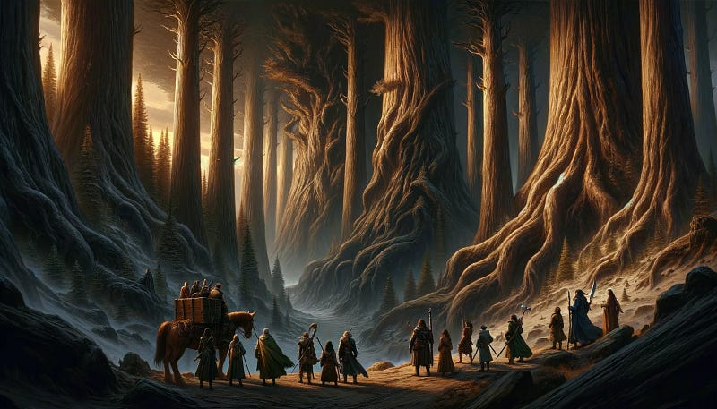

Navigating the Enchanted Forest of Data: A Tale of Reproducible Research with RMarkdown

Gathering Your Gear: Preparing for the Quest with RMarkdown
Standing at the threshold of the Enchanted Forest of Data, you’re about to embark on a journey where insight and clarity emerge from the shadows of complexity. Your guide through this mystical realm is RMarkdown, a powerful tool that weaves the raw, untamed data into narratives of enlightenment and discovery. However, to document your journey and share the tales of your adventure, you need to gather your gear, preparing you to face the forest’s mysteries.
The Magic of RMarkdown
RMarkdown is your scroll and quill in this adventure, allowing you to inscribe your findings, thoughts, and analyses into a document that others can follow, learn from, and marvel at. It integrates your data, your code, and your commentary into a seamless narrative that can take various forms, be it a web page, a presentation, or a document.
Summoning RMarkdown
Assuming R and RStudio are already companions on your quest, invoking RMarkdown into your toolkit requires a simple incantation in the RStudio console:
install.packages("rmarkdown")This spell equips you with the basic tools needed to start documenting your journey through the data forest.
Enchanting Your Scrolls: The Power to Create PDFs
To share your discoveries in the revered and widely accessible form of PDFs, you must call upon an ancient ally, LaTeX. However, the full might of LaTeX can be overwhelming, requiring a vast amount of space and knowledge to wield effectively. Fear not, for there is a more agile and equally potent ally in TinyTeX, a LaTeX distribution designed specifically for the needs of RMarkdown adventurers.
Installing TinyTeX: A Lightweight Companion
TinyTeX is your enchanted parchment, making the creation of PDF documents a breeze. Here’s how to summon TinyTeX into your realm:
install.packages('tinytex')
tinytex::install_tinytex()This incantation will install TinyTeX, ensuring that you have the necessary spells to turn your analyses and stories into PDFs. It’s a streamlined, efficient ally that takes up less space in your pack but stands ready to help you craft beautiful PDF documents that can be shared far and wide.
Why TinyTeX?
Choosing TinyTeX as your companion for generating PDFs is akin to choosing a swift, agile steed over a powerful but cumbersome warhorse. It provides just what you need for the journey ahead, without the burden of unnecessary armor and weaponry. With TinyTeX, you can navigate the dense underbrush of data analysis and emerge with documents that are not only insightful but also beautifully presented.
Ready to Embark
With RMarkdown and TinyTeX by your side, you are now fully equipped to step into the Enchanted Forest of Data. These tools empower you to capture the essence of your data-driven journey, blending analysis, commentary, and narrative into documents that resonate with wisdom and insight.
As you venture deeper into the forest, remember that your journey is about more than just the data you analyze; it’s about the stories you tell and the knowledge you share. RMarkdown and TinyTeX are your faithful companions, ready to help you illuminate the path for those who follow.
Paths Untold: Exploring the Realms of Output Formats
With RMarkdown and TinyTeX now part of your arsenal, you stand ready to chart your course through the Enchanted Forest of Data. The forest is vast, with myriad paths winding through its depths, each leading to different realms of insight and understanding. In RMarkdown, these paths are the various output formats available to you, each offering a unique way to share the tales of your journey.
The Crossroads: Choosing Your Path
As you prepare to embark on your exploration, you come to a crossroads. Here, the paths diverge, leading to different destinations: HTML, PDF, and Word, among others. Each path requires its own set of preparations and offers its own rewards. Choosing your path is the first step in shaping the tale of your adventure.
HTML Scrolls: Light and Agile
HTML documents are like the swift deer darting through the forest. They are light, easily shared, and accessible on any device with a browser. Crafting an HTML scroll is ideal for web-based reports, interactive presentations, and quick sharing of findings.
To create an HTML document, your RMarkdown file’s header might look like this:
---
title: "A Glimpse into the Enchanted Forest"
output: html_document
---PDF Tomes: Sturdy and Formal
PDF documents are the sturdy oak trees of the forest — robust, enduring, and universally respected. They are ideal for formal reports, academic papers, and any situation where a fixed format is essential. TinyTeX, your recently acquired ally, ensures that your journey into creating PDFs is smooth and unencumbered.
To summon a PDF tome, your spell is slightly different:
---
title: "Tales from the Data Forest"
output: pdf_document
---Word Parchments: Flexible and Familiar
Word documents are the clearings in the forest, where light shines through, offering flexibility and a familiar environment for many. They are perfect for collaborative projects, where documents need to be easily editable by others.
For a Word parchment, your incantation would be:
---
title: "Legends of the Analyzed Unknown"
output: word_document
---Charting Your Course
With the crossroads before you and the paths clearly marked, the choice is yours. Each format serves a purpose, catering to different audiences and types of insights you wish to share. Remember, the format is but a vessel for your journey’s tales. The true magic lies in the stories you tell, the data you unveil, and the insights you share.
As you select your path and prepare to venture deeper into the Enchanted Forest of Data, take a moment to reflect on your goals. Are you seeking to enlighten with interactive visuals? To formalize your findings in a scholarly tome? Or to collaborate on evolving narratives?
Choose your path wisely, for it will shape the tale of your journey through the Enchanted Forest of Data. With RMarkdown as your guide and TinyTeX by your side, you are well-equipped to navigate the myriad paths ahead, bringing clarity and insight to all who follow in your footsteps.


Conjuring Insights: The Magic of Data and Code Integration
In every corner of the Enchanted Forest of Data, from the dense underbrush to the tallest trees, there lies hidden magic waiting to be unveiled. This magic, the insights from raw data, can only be conjured through the integration of data and narrative, a skill every data explorer must master. It’s a process of weaving spells, where code not only reveals the data’s secrets but also tells the story of its journey.
The Spellbook of RMarkdown
RMarkdown serves as your spellbook in this mystical endeavor. Within its pages, you can write incantations (code) that summon data, transform it, and reveal its hidden messages. But the true power of RMarkdown lies in its ability to intertwine these spells with your narrative, creating a tapestry that captures the essence of your adventure.
Summoning Data
The first step in any spell of insight is to summon the data you wish to explore. This could be data you’ve gathered on your journey or ancient datasets known to the inhabitants of the forest. Using R code chunks, you can effortlessly call forth this data into your RMarkdown document.
::: {.cell}
```{.r .cell-code}
# Summoning the mystical dataset
set.seed(42)
# Generate a random dataset
important_metric <- runif(100, 0, 100) # 100 random numbers for the important metric
mystical_feature <- sample(c('Fire', 'Water', 'Earth', 'Air'), 100, replace = TRUE) # Random selection of features
data <- data.frame(important_metric, mystical_feature)
```
:::Transforming Data into Insights
With your data summoned, the next step is to transform it, revealing the insights hidden within. This transformation might involve casting spells of cleansing, enchantment (analysis), or divination (prediction). Each spell you cast brings you closer to understanding the forest’s secrets.
::: {.cell}
```{.r .cell-code}
# Casting a spell of enchantment
insightful_analysis <- data %>%
group_by(mystical_feature) %>%
summarize(mean_value = mean(important_metric))
```
:::Revealing Insights with Visuals
No tale of adventure and discovery is complete without visuals to captivate the audience. In RMarkdown, you can conjure visuals directly within your narrative, embedding charts, graphs, and maps that bring your insights to life.
::: {.cell}
```{.r .cell-code}
# Revealing the insights through a magical visualization
ggplot(insightful_analysis, aes(x=mystical_feature, y=mean_value)) +
geom_col() +
theme_minimal() +
labs(title="The Enchanted Forest of Data: A Visual Tale")
```
:::
Weaving Code into Narrative
The magic of RMarkdown allows you to seamlessly weave your code with narrative, creating a document that is both informative and engaging. As you write your tale, intersperse your narrative with code chunks, allowing your readers to follow your journey step by step. This integration not only enhances the readability of your document but also ensures that your insights are reproducible, a cornerstone of magical research.
Telling the Tale
As you conjure insights from your data, remember that the power of your analysis lies not just in the numbers but in the story they tell. Use your narrative to guide your readers through your findings, explaining the significance of each insight and how it contributes to understanding the Enchanted Forest of Data. Your narrative should illuminate the path, making the complex simple and the obscured clear.
The Art of Insightful Magic
Conjuring insights from raw data, blending code into narrative, is an art as much as it is a science. It requires not only technical skill but also a storyteller’s touch. As you journey through the Enchanted Forest of Data, let RMarkdown be your guide, your spellbook, and your companion. With it, you can weave spells that illuminate the forest’s deepest secrets, sharing the magic of your insights with the world.
The Portal to Advanced Realms: Unveiling the Full Spectrum of RMarkdown Magic
As our journey through the Enchanted Forest of Data reaches a pivotal juncture, we find ourselves at the Portal to Advanced Realms, a gateway that reveals not just the path we’ve traversed but the expansive horizons that lie ahead. Here, the basic alchemy of RMarkdown merges with advanced enchantments, offering a glimpse into a world where data storytelling transcends boundaries, and documents come alive with interaction and insight.
Multilingual Incantations and Dynamic Documents
Beyond the portal, RMarkdown’s versatility shines, accommodating spells cast not only in R but also in Stan, Python, and SQL, allowing for a polyglot approach to data analysis. This realm is where documents breathe and react, transforming static pages into dynamic experiences through the integration of interactive elements and real-time data exploration.
Visual Editor and Templates: Crafting with Precision and Ease
The Visual Markdown Editor, a recent innovation in the realms of RStudio, simplifies the crafting of narratives, enabling creators to focus on content without losing themselves in markdown syntax. Coupled with an array of templates that serve as blueprints for various forms of scholarly and professional communication, these tools ensure that every document is both beautiful and structurally sound, adhering to the stylistic and formatting norms of its intended audience.
The Mystical Configurations of YAML
At the heart of every RMarkdown document lies the YAML front matter, a powerful configuration that dictates the document’s nature. Here, titles are bestowed, authors are named, and the document’s destiny is shaped through output formats and parameters. This is also where the document’s linguistic capabilities are defined, setting the stage for the integration of multiple programming languages and ensuring that the narrative can adapt and respond to the reader’s input.
Envisioning the Future: Advanced Functionalities Await
As we peer through the portal, we envision a future where RMarkdown documents are not merely passive carriers of information but active participants in the quest for knowledge. Parametrized reports, automation, predictive modeling, and the seamless integration of advanced statistical and machine learning algorithms beckon, promising a journey where insight and foresight walk hand in hand.
The journey through the Enchanted Forest of Data is far from over. With each step through the portal, the landscape expands, revealing new paths to explore, new magics to master, and new stories to tell. The advanced realms of RMarkdown await, filled with potential for those brave enough to venture beyond the familiar, armed with the knowledge and tools to transform data into stories that illuminate, engage, and inspire.
Conclusion
As we momentarily pause at the verge of the Portal to Advanced Realms within the Enchanted Forest of Data, our expedition with RMarkdown as our guide has reached a pivotal chapter. Through weaving syntax with narrative and integrating multifaceted data into our stories, we’ve only scratched the surface of the forest’s mysteries. Yet, the path we’ve trodden has prepared us for the deeper magic that lies ahead, revealing the inherent power of RMarkdown to transform and enlighten.
This journey, rich in discovery and insight, beckons us to delve further, promising that the realms of knowledge are boundless for those equipped with curiosity and the right tools. But as we stand here, reflecting on our adventure, we realize that our exploration of RMarkdown is set to embark on a more profound exploration in our next narrative.
The forthcoming article will venture into the advanced functionalities of RMarkdown, where the spells of dynamic documentation, interactive storytelling, and the seamless blend of analytical rigor with compelling narrative come to life. We’ll explore the enchantments that allow documents to adapt, react, and engage with the audience in ways that transform passive consumption into active exploration.
Imagine a world where your documents are not just static pages but living entities that breathe, change, and grow with the reader’s interaction. A realm where the barriers between data scientist, storyteller, and reader blur, giving rise to a collaborative journey of discovery. This is the promise of the advanced magics of RMarkdown, and it’s this promise that our next article seeks to fulfill.
Join us as we prepare to step through the portal, armed with the foundational knowledge of RMarkdown and the anticipation of the wonders that await. The journey ahead is one of transformation — of data, of narratives, and of our very approach to storytelling. The magic of RMarkdown is the key, and the next chapter promises to unlock doors to realms unimagined, where the stories we tell with data become as dynamic and multifaceted as the data itself.
The adventure continues, and it promises to be a journey of enlightenment, engagement, and endless possibilities. Stay tuned for our next article, where we unlock the advanced capabilities of RMarkdown and take our storytelling to new heights. The forest awaits, and its deepest secrets are yet to be revealed.